These are solo projects built using AI-accelerated pipelines — Cursor, ComfyUI, and Stable Diffusion. Some are prototypes for games I coded myself. Some are pure visual development: character systems, brand identity, and art direction done without a team or a brief. The playable versions will live at utilityinfielder.com once that site is live.
BizzyDad
A life-management game concept. I developed the full character roster solo — 15 advisors, coaches, and specialists, each with a distinct personality and visual identity that reads at small portrait size. Consistent style across the full cast without a style guide document; the consistency lives in the pipeline and in the art direction calls made during generation.
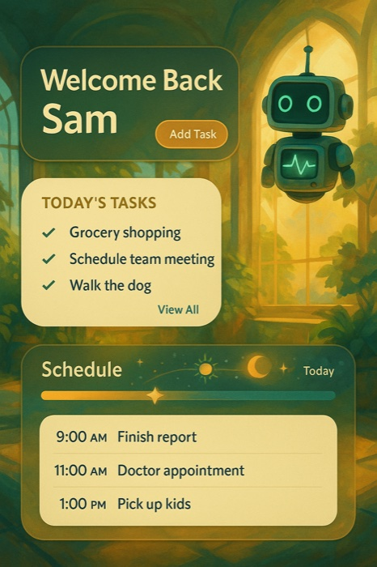
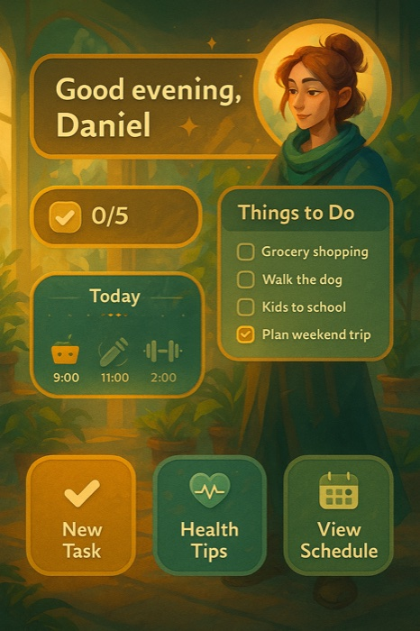
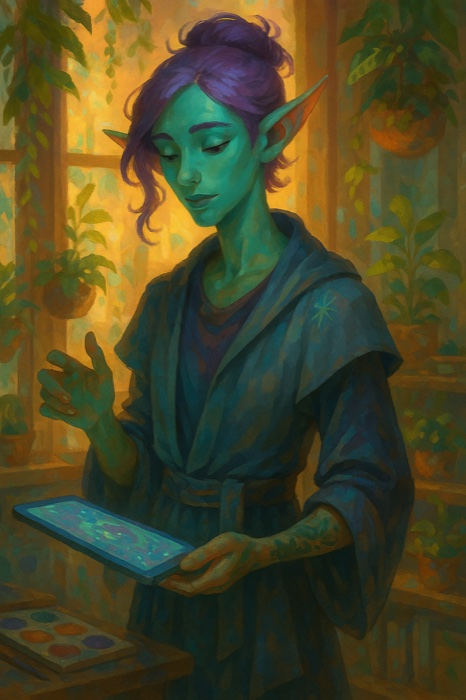
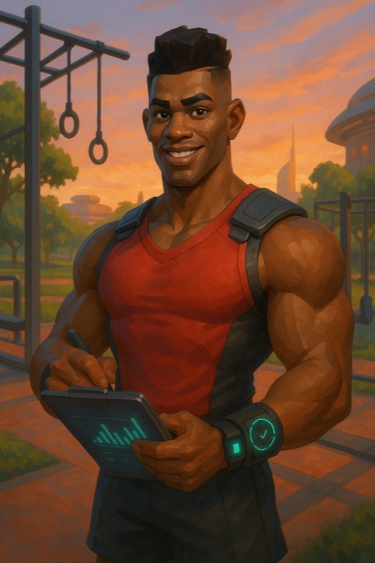
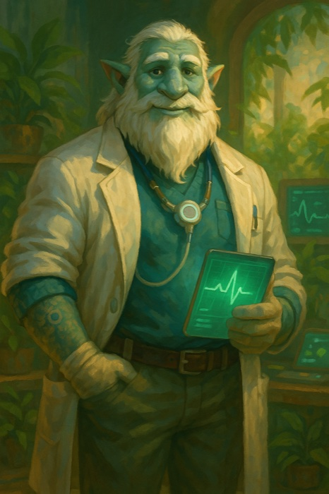
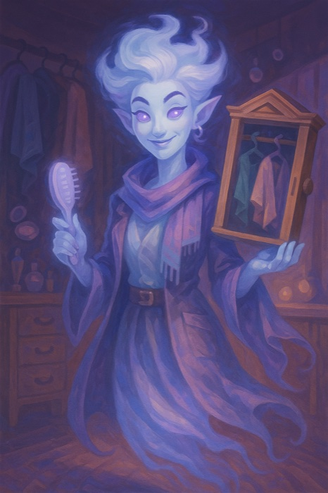
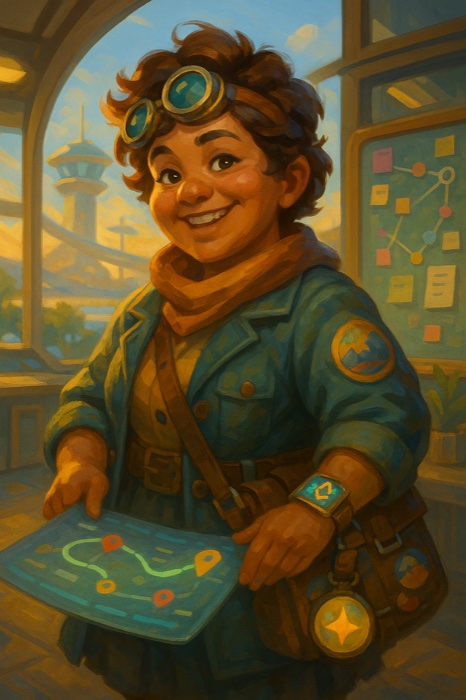
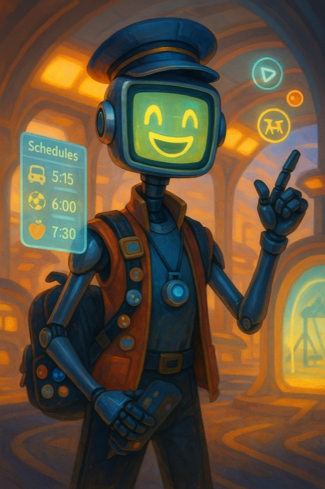
Dirtbagz
A robot squad-builder baseball game — you assemble a team of modular robots, play arcade-style matches, and scavenge parts from post-game loot chests to upgrade your roster. Visual identity draws from NES-era RBI Baseball with expanded color and modern juice. Same AI-accelerated pipeline as BizzyDad; opposite mood. I developed the splash art, background, UI concepts, and rewards screen independently.
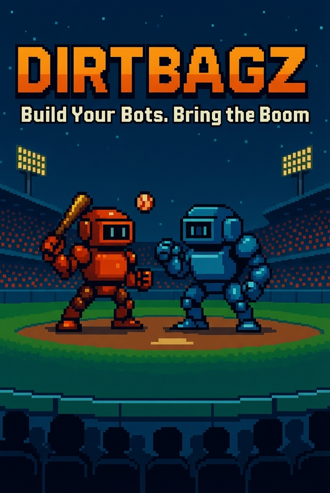

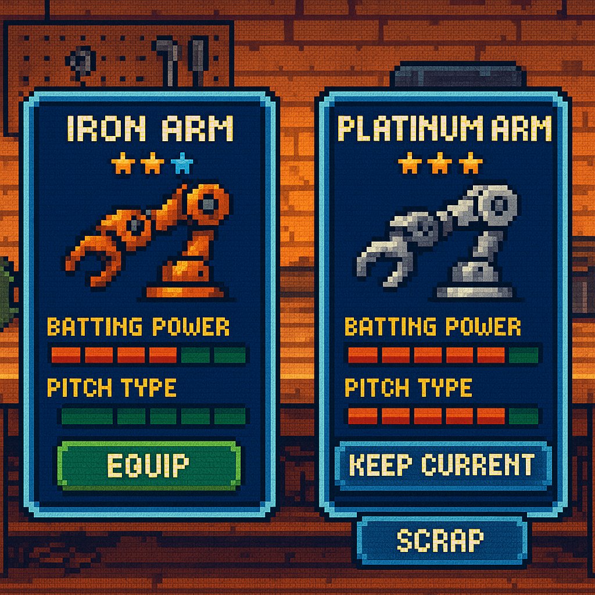
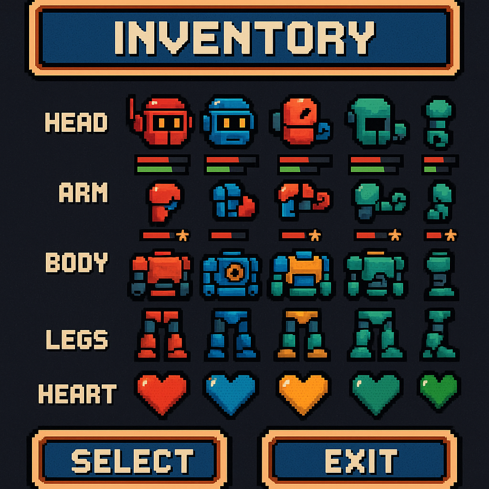
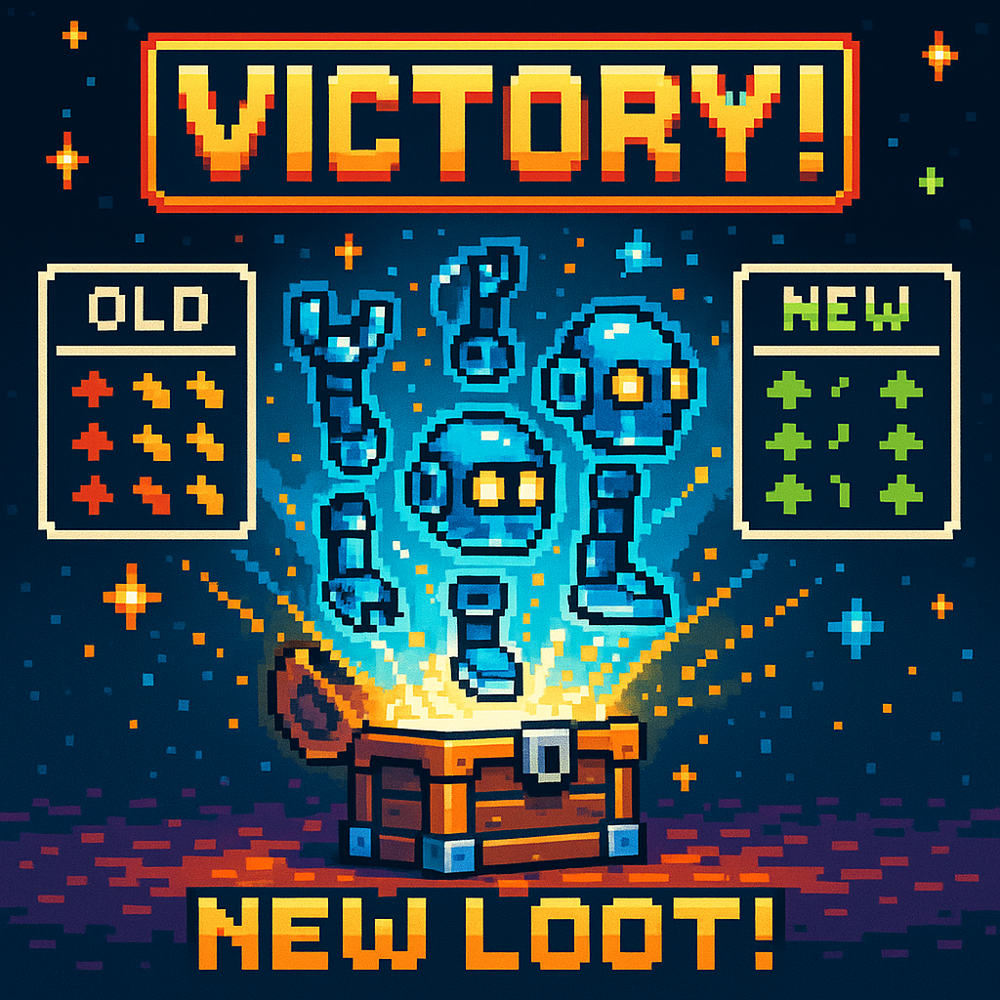
Gateaux
A cozy language-learning game where players run a magical bakery, taking orders in new languages and decorating pastries to unlock characters and story. I explored the design, the game mechanics, the story, and the visual identity. I developed the character lineup and the visual identity using AI tools — building a warm, distinctive style that scales from UI icons to splash art.
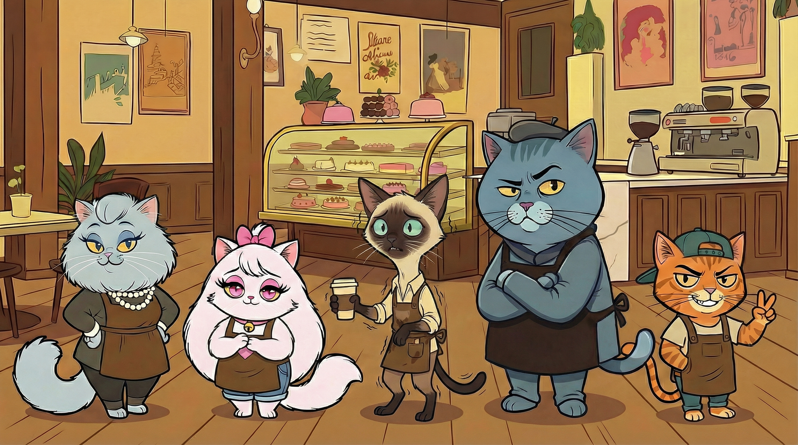
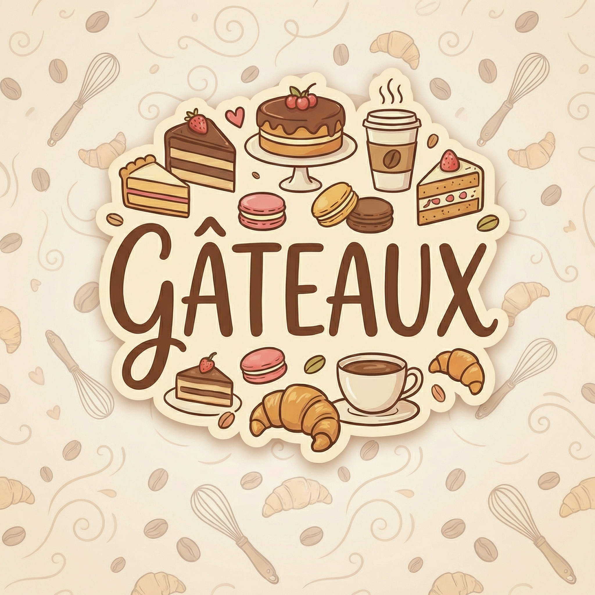
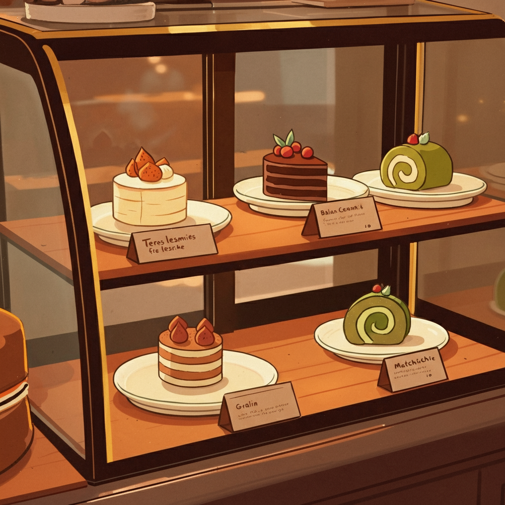
Portrait Studies
Philosophical figures as illustrated characters — Freud, Kristeva, Lacan. An exploration of how much personality and period detail can be embedded into a consistent portrait style through prompt engineering and iterative generation.